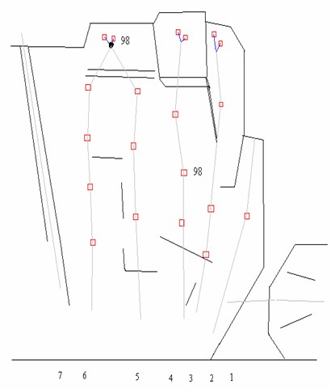
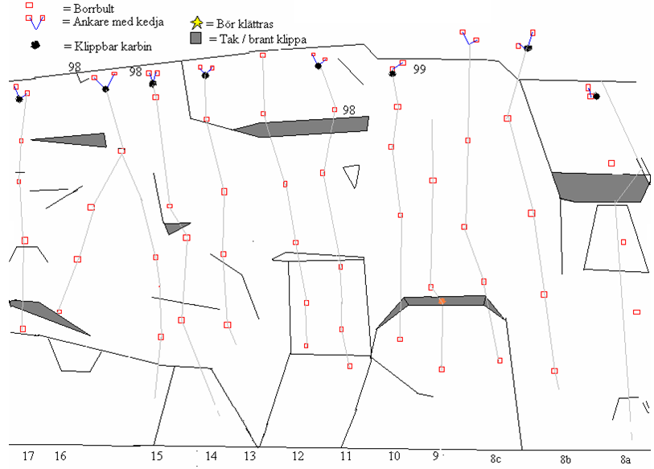

Fjärdhundra
GPS: 59.792825,16.983183333333333
Allmänt
Sportklätterklippa med leder i graderna 6-8. Finns möjlighet att sätta topprep.
Karaktär
En i genomsnitt vertikal vägg, vars höjd uppskattas till 10-15 meter. Rolig klättring på distinkta grepp och god friktion för skorna.
Historik m.m.
Ungefär 1993 började man klättra på klippan, men det stora genombrottet för klippan blev nog sommaren 1995 då den första guiden till lederna gavs ut. Även under år 96 och 97 gjordes ytterligare ett antal nyturer. Idag finns det totalt 31 turer (då är ett par kombinationer / varianter) uppsatta av ett tiotal olika klättrare.
Efter att allt fler började klättra på klippan kom det 1998 och 1999 upp flertalet kompletterande firningsankare som Uppsala klätterklubb satte upp med ett stort stöd från Crux AB. Detta för att inte slita på träden och vegetationen ovanför klippan. Men framför allt för att höja säkerheten och klätterfrekvensen.
Obs!!
På firningankarna sitter det karbiner (utan låsbar grind) som bör backas upp med en skruvkarbin vid topprepning. Möjligheten finns till att klippa ur dessa när repet tvinnas runt sig själv eller om man går över karbinen / ankaret.
Vägbeskrivning
Åk till Fjärdhundra. Åk genom samhället, efter någon km åker du över en bro och tar direkt vänster mot Altuna, in på en grusväg. Åk denna en kort stund och ta sen höger mot Nygård. Klippan ses efter en stund.
Passera klippan, åk förbi en handfull hus och parkera sedan på "Klätterparkering" (skyltad, men skylten kan ha rasat) till vänster. Se till att ni inte står i vägen för annan trafik.
Diskussion om vägbeskrivningen kan läsas på
. Kolla
också. Det verkar vara ett känsligt kapitel.
Access
Markägaren är positiv till klättring men vill inte ha någon klätterinvasion. Håll låg profil, ställ bilen på avsedd plats och bete er som folk. Kontakta Uppsala Klätterklubb innan ni åker till klippan för att få veta detaljerna i accessfrågan.
Leder
Klippan består av en enda lång vägg, här uppdelad i tre sektioner (med mossiga partier emellan). Sektioner och leder är från höger till vänster, eller anmarschordning om man så vill.
Södra delen

- 1
- BoulderTravers
- ?
- Start på den vänstra sidan av kaminen till landningen är en risbuske åt höger.
- 3
- La via del chato
- 6+
- tt kortare problem upp på hyllan. Runout till slutet.
- 4
- Snedtrampet
- 6+
- Ett måste bland de lättare lederna
- 5
- El culo electrico
- 6
- Detta är nog klippans mest repeterade led. Jämn klättring på fina grepp.
- 6
- Korpen flyger
- 6-
- Hård för sin grad.
- 7
- Oborsten
- 4+/5-
- För den som hellre lägger kilar och hexor är nog denna en bra uppvärmning. Man bör nog undvika att använda friends bakom de vassa blocken.
Åkern

- 8a
- Hövdingen
- 5+
- Hårt (6a+?) insteg med första bulten ganska högt placerad. "Nybörjargrad", men inget för nybörjare.
- 8b
- Mapumbe
- 6+
- Fin och jämn linje.
- 8c
- Spider Dance
- 7-/7
- Välklättrad led
- 9
- Seven plus
- 7+
- En led med få repetitioner.
- 10
- Premiären
- 7-
- En led som fick sin renässans med det nya toppankaret.
- 11
- Vindöga
- 7
- Omväxlande klättring
- 12
- Stampad Berguv
- 7+/8-
- Leden har även lytt under namnet Åttjäveln, kanske p.g.a. att denna del av klippan bjuder på bitvis ojämn klättring.
- 13
- El Ninjo
- 7
- Lite svårläst
- 14
- Twist
- 6/6+
- En av de bättre lederna på klippan. Distinkt crux som sätter graden.
- 15
- Apor på åkern
- 7
- Jämn och fin led. Håll tempot uppe.
- 16
- Studenten
- 8
- Små smärtsamma crimps. Går ihop med nr 15 mot slutet.
- 17
- Bulletprof
- 7-
- Tjockabultar!!
Skogen

- 18
- Huggormen
- 7+
- Namnet efter ett slingrande djur som enligt uppgift trivdes bra under en repsäck nedan för leden..
- 18b
- Viper
- 8/8+?
- OBS! Klättra ej in på Huggormen.
- 19
- Barracuda
- 8
- Lite svårare utstegs- variant på nr 20.
- 20
- Sök och finn
- 7
- En något känslig start avslutas med relativt fin klättring
- 21
- Besökarna
- 6+
- Väl repeterad och har ett flertal onsighter på samvetet.
- 22
- Besökarna Direkt
- 7-
- Ett direkt insteg rakt över det lilla taket, som höjer graden något steg.
- 23
- Caramba Club
- 7
- Här kan man i alla fall använda sina förmodade kunskaper från inomhusväggen.
- 24
- Connection
- 7-/7
- Kombination av nr 23 till 2:a bulten sedan ut på nr:25.
- 25
- Examen
- 8-/8
- Crux betonad led
- 26
- Kapten Zoom
- 6+
- Bitvis känslig svaklättring.
- 28
- Soliga händer
- 6+
- Efter att den något högt placerade första bulten har klippts kan man njuta av fin klättring.
- 29
- Dynamo
- 7/ 7+
- På denna led kan en liten kil / friend vara bra i starten.
- 31
- Naturapoteket
- 7-
- Fin och ren klättring en gång i tiden. Säkras okej med två camalot 1 eller ett par mindre friends, en medelstor kil och en WC etta (friend).
Kategori:Sport
Kategori:Uppsala
Kategori:Uppland
Kategori:Saknar vägbeskrivning
Copyright (C) Permission is granted to copy, distribute and/or modify this document under the terms of the GNU Free Documentation License, Version 1.3